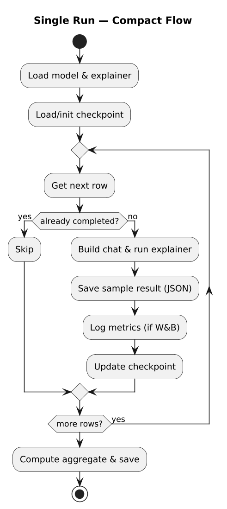
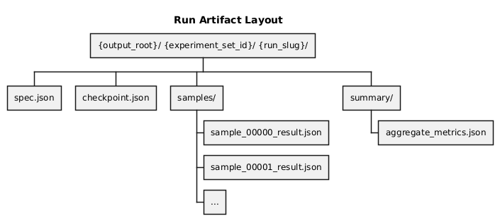
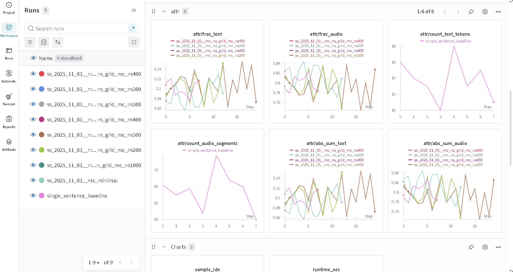

mllm_shapx - Experiments Runner#
Overview#
mllm_shapx is the configuration-driven experiment runner used in this monorepo to
execute reproducible SHAP runs (exact and sampling-based) over curated dataset shards.
It focuses on:
Loading dataset shards (Hugging Face datasets)
Expanding a JSON config into a sweep of concrete runs
Executing each run with checkpoint/resume support
Writing structured artifacts to disk
Optional Weights & Biases logging + artifact upload
Below is a diagram showing DAG of runner operation:
{kind=link}

Where it lives#
In this repository, the code lives under:
experiments/mllm_shapx/
The CLI entrypoint is:
python -m mllm_shapx.cli
Environment / setup#
The runner is designed to work in the monorepo environment.
If you run mllm_shapx without installing the mllm_shap package into the active
environment, set MLLM_SHAP_SRC to point at the package sources so imports resolve:
export MLLM_SHAP_SRC=../../mllm_shap/src
export LOG_LEVEL=INFO
A minimal example environment file is provided at:
experiments/mllm_shapx/.example.env
Running the CLI#
Validate a config#
uv run python -m mllm_shapx.cli validate --config experiments/mllm_shapx/configs/mc_minimal.json
Optionally, validate and also test that the dataset shard can be fetched/read:
uv run python -m mllm_shapx.cli validate \
--config experiments/mllm_shapx/configs/mc_minimal.json \
--check-dataset
Run experiments#
uv run python -m mllm_shapx.cli run --config experiments/mllm_shapx/configs/mc_minimal.json
Resume an interrupted run#
Resume uses per-run checkpoint.json plus the presence of already-written sample
results on disk:
uv run python -m mllm_shapx.cli run \
--config experiments/mllm_shapx/configs/mc_minimal.json \
--resume
Batching multiple configs#
A helper script exists for sequential runs with retry and logging:
experiments/mllm_shapx/run_configs.sh
For cluster execution, the repository includes Slurm wrappers under:
experiments/run_mllm_shapx.sbatchexperiments/run_mllm_shapx_exact.sbatch
Outputs and artifacts#
For each expanded (concrete) run, mllm_shapx creates a run directory:
{kind=link}

Key files:
spec.json: fully-resolved configuration for the concrete run (after sweep expansion)checkpoint.json: resume state (completed indices, next index)samples/*.json: per-row serialized results (attributions + metadata)summary/aggregate_metrics.json: run-level aggregates (runtime and attribution summaries)
Configuration model (high level)#
The runner parses a JSON config into an ExperimentSet dataclass (see
experiments/mllm_shapx/config.py). At a high level:
Top-level includes
experiment_set_id,output_root,connector,devicedatasetselects the dataset repo/subset/split and loading knobs (parquet, trust_remote_code)selectioncontrols which rows to process (start index, max samples, shuffle seed)modalitycontrols input/output modality combinationsshapchooses the SHAP mode + embedding similarity + reducer + normalizerexperimentsis a list of variants; each variant may expand into many runs (sweeps)
Weights & Biases integration#
If enabled in the config, W&B logging is initialized once per run and:
logs per-sample metrics during execution
uploads summary JSON and (optionally) sample directories as artifacts
An example of a run logged to W&B:
{kind=link}

Troubleshooting#
Import errors for
mllm_shap: setMLLM_SHAP_SRCor install the package into the environment.Stuck/partial runs: use
--resume; to restart cleanly remove the run’scheckpoint.json.More verbosity: set
LOG_LEVEL=DEBUG.